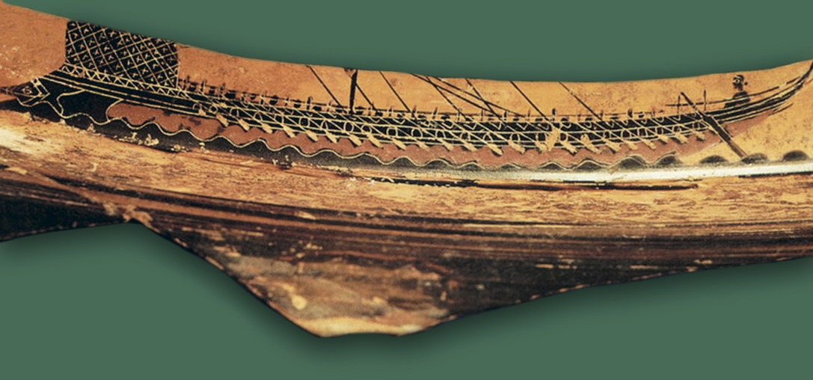

Все традиционные общества умеют связывать энергию «лишних людей», ставить ее на службу обществу (ирригация, мандаринат) или хотя бы нейтрализовать ее (пирамиды, стены, дворцы, храмы). В этом смысле пентеконтера — 50-весельный корабль, изобретение безвестного плотника, «человека Афины» — был по замыслу и первоначальной функции средством среди средств социализации «лишних людей», обращения их энергии на пользу государству.
Петров М. К. Пентеконтера. В первом классе европейской школы мысли.

«Койран, родом из Пароса, увидел в Византии дельфинов, пойманных неводом, которых собирались убить; он купил их и выпустил всех на волю. Немного спустя он плыл на пятидесятивесельном корабле, везшем, как говорят, разбойников. В проливе между Наксосом и Паросом корабль погиб, и все остальные утонули: под него же, как рассказывают, подплыл дельфин, посадил на себя и привез к Сикинфу в пещеру, которую показывают доныне и которая называется Койранейон»
(Пер. В. Вересаева)
‘πεντήκοντ᾽’ ἀνδρῶν λίπε Κοίρανον ἤπιος Ποσειδῶν
Спас из пятидесяти только Койрана
Добрый Посейдон.
Пер. В.Вересаева
ПЕНТЕКОНТЕ́РА, пентеконтор (греч. πεντηϰόντερος , πεντηϰόντορος , от πεντηϰοντάς – пятьдесят), др.-греч. боевое судно, оснащённое парусом и 50 вёслами (по 25 с каждого борта). Вёсла располагались в один (μονόϰροτος) или два (δίϰροτος) яруса. На носу устанавливался бронзовый таран (часто в виде головы вепря). Корпус собирался из досок, соединённых торцами в пазовой технике. Одноярусная П. имела предельно допустимую длину (соотношение к ширине 10:1). Двухъярусная П. была менее вместительным, но значительно более быстроходным и манёвренным кораблём; к ней восходит либурна – осн. боевой корабль периода Рим. империи.
До греко-персидских войн П. была осн. типом корабля греч. флотов. Впервые упоминается в «Илиаде». С 7 в. до н. э. П. стала использоваться для дальних мор. путешествий (была осн. судном Великой греч. колонизации). С 5 в. вытеснялась триерой, у более бедных полисов сохранялась до эллинистич. периода.
Лит.: Morrison J. S., Williams R. T. Greek oared ships, 900–322 B. C. L.; Camb., 1968; Coates J. F. The naval architecture and oar systems of ancient galleys // The age of the galley: Mediterranean oared vessels since pre-classical times. L., 1995.
ПЕНТЕКОНТЕРА // Большая российская энциклопедия. Том 25. Москва, 2014, стр. 579-580
Вел Филоктет за собою, стрелок превосходный из лука -
Семь кораблей. И на каждом из них пятьдесят находилось
Сильных гребцов, превосходно умевших сражаться стрелами.
Il. 2.718-20
Зевсом любимый Пелид пятьдесят кораблей быстролетных
Вместе с собою под Трою привел, и при веслах на каждом
По пятьдесят человек находилось бойцов превосходных.
Il. 16.169-70
Первоначально военные суда были одногребные (monokrota, μονόκροτα), т. е. с одним только рядом весел числом от 20 до 100, из которых одна половина была с одной, а другая с другой стороны; по числу весел одногребные суда назывались двадцативесельными (eikosoroi εἰκόσοροι), тридцативесельными (triakontoroi τριακόντοροι), пятидесятивесельными (penthkontoroi πεντηκόντοροι) и т. д. После Саламинской битвы стали строить и многогребные суда, т. е. с несколькими рядами весел, один ряд над другим. В афинском военном флоте главным родом судов были трехгребные галеры (τριήρεις), по словам Фукидида (I, 13), изобретенные коринфянами приблизительно за три века до конца Пелопоннесской войны, а со времен Ликурга стали строиться и 4-х и 5-гребные корабли (τετρήρεις, πεντήρεις). В многогребных судах отверстия для весел различных рядов помещались не одно над другим, а наискось, чтобы весла не задевали одно за другое; чем выше был ряд, тем тяжелее и длиннее были весла и тем труднее было ими действовать (однако каждый гребец мог легко нести свое весло по сухому пути. Фук. II, 93), почему гребцы верхних рядов получали и большее жалованье.
… наиболее ходовым и универсальным военным кораблем следует, видимо, считать 50-тивесельный корабль филоктетова типа:
... пятьдесят воссидело на каждом
Сильных гребцов и стрелами искусных жестоко сражаться. (Илиада, II, 719-720).
Пытаясь проследить историю греческого флота до VI в. до н.э., Фукидид приходит к выводу: «Хотя флоты эти образовались много поколений спустя после Троянской войны, однако, как и в то время, они заключали в себе, повидимому, мало триер, состоя все из пентеконтер (50-тивесельных кораблей. - М.П.) и длинных судов» (История, 1, 14). О признанном преемнике Миноса в морских делах, о Поликрате Самосском, Геродот пишет: «Он владел сотней пятидесятивесельных кораблей и тысячей лучников» (История, III, 40). На каждом из 12 кораблей Одиссея при его отплытии на родину было по 50 «совмещенных» гребцов и воинов вроде злополучного Ельпинора, сломавшего со сна шею, который, встретив Одиссея в Аиде, требует погребения по пиратскому обычаю:
Бросивши труп мой со всеми моими доспехами в пламень,
Холм гробовой надо мною насыпьте близ моря седого;
В памятный знак же о гибели мужа для поздних потомков
В землю на холме моем то весло водрузите, которым
Некогда в жизни, ваш верный товарищ, я волны тревожил.
(Одиссея, X, 74-78).
Такой 50-тивесельный корабль и должен, видимо, рассматриваться начальной школой творчества - первой творческой лабораторией человека. 50 гребцов-воинов, каждый из которых обладает своей волей, особенностями, личным «веслом» и местом на скамье гребцов, и каждый из которых сам по себе в общем-то пустая величина, неспособная стронуть корабль с места, образуют все вместе, «в единстве разнообразия», гибкую и огромную силу - грозу для любого пункта на побережье.
Петров М. К. Палуба пиратского корабля и будущее